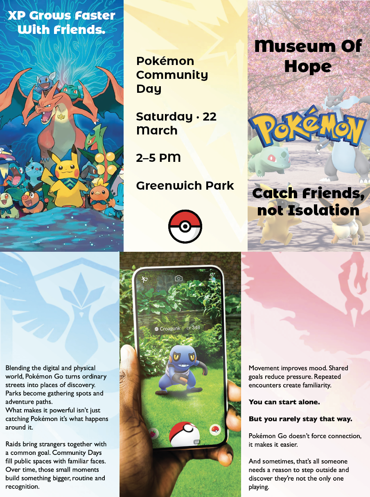
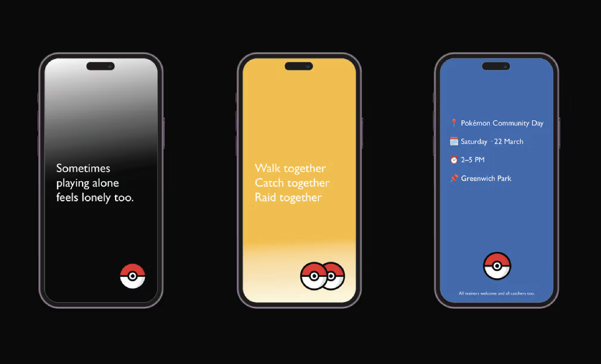
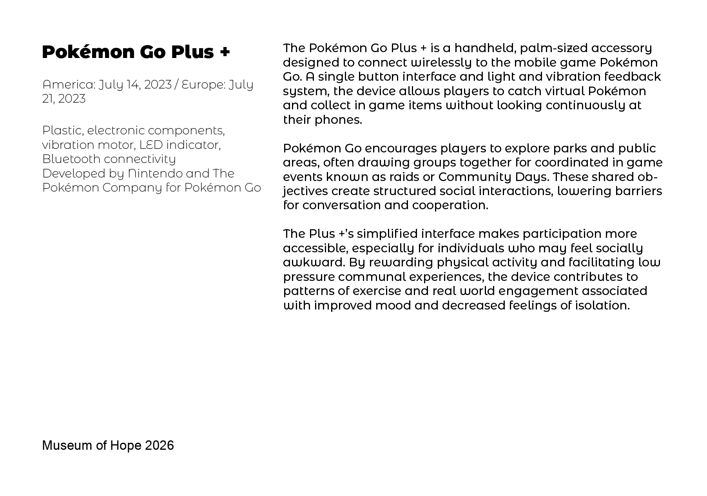

Exploring gaming technology as a tool for connection and a shared experience.



I spent a fair amount of time researching how technology is displayed within museums and how games can positively support neurodivergent people. This research also connected closely to my dissertation, particularly in exploring how digital interaction and gaming communities can reduce feelings of isolation and encourage social connection. I became interested in how everyday gaming objects can hold emotional, social and cultural value beyond their practical function.
My chosen object for the project was my Pokémon GO Plus catcher, a device linked to the mobile game Pokémon GO. I selected this object because it represents more than simply gameplay, it reflects movement, routine, community interaction and shared experiences between players. The game itself encourages users to explore public spaces and interact with others during events, making it an interesting object to position within a museum context focused on social behaviour and technology.
To support this idea, I designed a flyer advertising a community meet up day in the park. The purpose of this was to encourage people to interact socially rather than isolate themselves while gaming. I intentionally kept the flyer visually connected to Pokémon branding through bright colours, familiar imagery and playful design choices to make it feel recognisable and inviting to fans of the game.
I also created a series of social media posts to promote the event. The first post used a dark background with the phrase “Sometimes playing alone feels lonely too,” highlighting the emotional side of gaming and isolation. The second post introduced a more positive and energetic tone using a bright yellow background alongside the phrases “Walk together, catch together, raid together,” presenting community as a solution to loneliness. The final post clearly communicated the event details, including the meet up day, time and location.
I designed a museum style label for the Pokémon GO Plus catcher. The label included factual information such as its release date, materials and function, alongside a description explaining how the device encourages players to connect with others through shared activities and public events. By presenting the object in this format, I wanted to explore how gaming technology can be viewed not only as entertainment but also as a tool for social interaction, accessibility and community building.